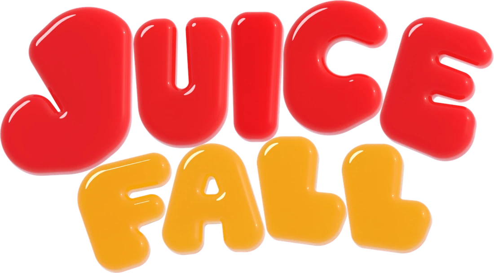
Match colors, not rows.A juicy color match puzzle for iPhone. Line up three jellies of one color, watch them burst into juice, and let whatever falls set off the next match.
- Free with ads
- One purchase, no subscription
- Plays offline


How it plays
Easy to learn, and every drop is a small color puzzle.
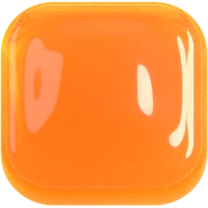
Drop
Jelly shapes fall into a narrow well. Drag to move, tap to turn.
Match
Three or more of one color in a row or a column burst into juice. Full rows do nothing.
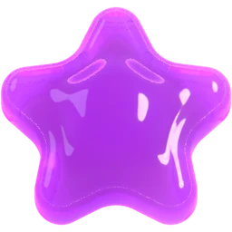
Chain
What falls can match again, and every step of a cascade multiplies your points.

Cascades
One drop can set off a chain
When jellies burst, the ones above fall straight down and can match again. Every step of a cascade multiplies the points, and a cascade three or five steps long earns you a swap.

Swaps
Bank a swap for the perfect moment
Landings and clears fill the swap meter, and you can bank three. When a shape lands, glowing jellies show every swap that makes a match. Tap one and the chain goes on. A swap is used only when it scores.

Three ways to play
Wild, Calm or Hectic
- Wild
- Speeds up every level.
- Calm
- No gravity: each shape waits until you drop it, and swaps wait for you.
- Hectic
- Levels up twice as fast, with more fruit and freeze diamonds.
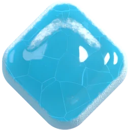
When a fruit sets one off, the jellies round it freeze for a few seconds and can’t be swapped until they thaw.
Quirky Play
A new quirk every day
A 90-second game with a twist that changes every day, the same for everyone. Every board you clear adds 10 seconds to the clock. Quirky Play is the same for every player, with or without the Full Game.
Fruit with a job
The shape of a match makes fruit. Swap two of a kind together and they fuse into a super fruit, three times as strong.
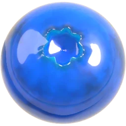
Blueberry
Four in a row. Clears its row.
FreeBanana
A square of four yellow. Knocks jellies off the board.
Free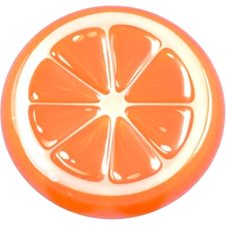
Orange
Four in a column. Clears its column.
Full Game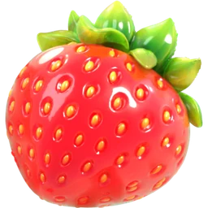
Strawberry
An L or a T. Bursts a 3 by 3 area.
Full Game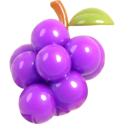
Grapes
Five in a line. Clear every jelly of one color.
Full Game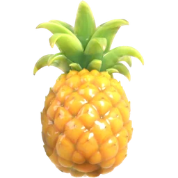
Pineapple
Comes now and then in your shapes. Turns every jelly of one color into another.
Full Game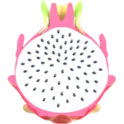
Dragon fruit
Comes once pink has joined. Shuffles the jellies to find a match.
Full Game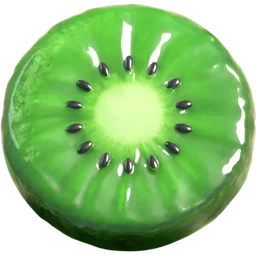
Kiwi
Swap two different fruit together: both powers, twice as strong.
Full Game
Every Full Game fruit has a one-minute tutorial, free to everyone.
See it on iPhone


Made for iPhone
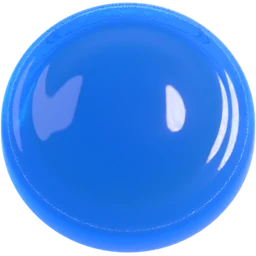
Home Screen widget
Small or medium. A tap starts a game.
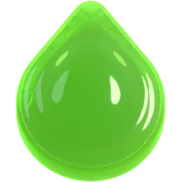
Siri and Shortcuts
Say “Play Juicefall” or “Open Quirky Play in Juicefall” (in English).
Light and dark
Two looks, each with its own palette.
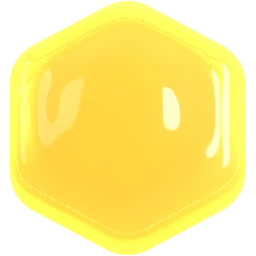
Game Center
Leaderboards for Wild, Calm and Hectic, and 27 achievements.
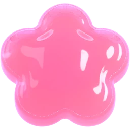
iCloud
Your records follow you to a new iPhone.
Every color a shape
Heart, square, circle, drop, star, hexagon and flower. VoiceOver can play too.
Plays offline
No account, and no connection needed to play.
iPhone Duo
Plays closed on the outer display or open on the inner one.
Six languages
English, French, German, Japanese, Portuguese and Spanish.
Free to play. One purchase for the full game.
Free download
Free
- Wild, Calm, Hectic and Quirky Play
- The blueberry, the banana and super fruit
- A one-minute tutorial for every fruit
- Ads from Google: a full-screen ad between games, at most every three minutes, and a banner on the card after a game. Never during play.
Full Game
US$2.99 once
- Removes all ads
- Adds the orange, strawberry, grapes, pineapple, dragon fruit and kiwi to Wild, Calm and Hectic
- One in-app purchase, no subscription
- Family Sharing
The App Store sets the price in your country’s currency. Quirky Play and the tutorials are the same for everyone.
Questions
What is Juicefall?
A falling-jelly puzzle for iPhone where you match colors, not rows. Three or more jellies of one color in a row or a column burst, and whatever falls after can match again.
When does it come out?
Juicefall comes to the App Store for iPhone in November 2026, free to download.
Is it free?
Yes, with ads. One in-app purchase, the Full Game (US$2.99 in the United States), removes the ads and adds six fruits. There is no subscription.
Does it work offline?
Yes. The whole game plays with no connection; Game Center scores and iCloud records catch up when you are back online.
Which iPhone models does it run on?
iPhone with iOS 26 or later, iPhone Duo included.
Who makes it?
Juicefall is made by Aaron Seaman, an independent developer.
Coming to iPhone in November 2026
Follow Juicefall for the launch.